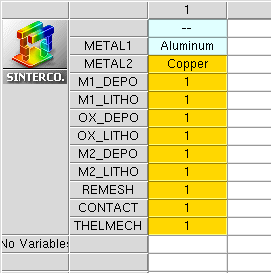

Sentaurus Interconnect
4. Example: Thermoelectromechanical Analysis of an Interconnect (3D)
4.1 Overview
4.2 Using a Mask Layout to Build the Structure
4.3 Defining the Boundary Conditions and Loads
4.4 Solving the Coupled Thermal, Electrical, and Mechanical Domains
4.5 Postprocessing
Objectives
- To create an interconnect structure from a layout.
- To show how to activate the Joule effect and the temperature boundary conditions in the model.
- To demonstrate how to couple different physical domains (thermal, electrical and mechanical).
4.1 Overview
In this example, you will simulate a simple technological process to create one level of interconnect with two metals using a given layout, and then will perform a coupled field analysis of the thermal, electrical, and mechanical effects in three dimensions.
When the process simulation is completed and the 3D structure is finished, you start the thermoelectromechanical analysis part. A potential difference is applied to two pads at the extremities of the interconnect, the produced current generates heat by the Joule effect, and finally, due to the thermal expansion of the different materials involved, stresses are induced. This sequence of events is calculated in a coupled and self-consistent way.
A basic knowledge of Sentaurus Workbench and Silicon WorkBench is required to better understand the structure of this project and the way you deal with layouts and masks. See the Sentaurus Workbench module and Silicon WorkBench Interface module.
The complete project can be investigated from within Sentaurus Workbench in the directory Applications_Library/GettingStarted/sinterconnect/3D_Interconnect.
4.2 Using a Mask Layout to Build the Structure
In practice, it is common to have a layout as a starting point for the generation of interconnects or other silicon technology structures. Here, you adapt a simple GDS layout for the needs of Sentaurus Interconnect using Silicon WorkBench. The GDS file is imported directly into Sentaurus Interconnect using the following commands:
icwb gds.file= "@pwd@/Model1.gds" cell= "base" scale= 1e-2 \
layer.numbers= {0:0 1:0 2:0 3:0 4:0 5:0} \
layer.names= {0:0 1:0 2:0 3:0 4:0 5:0} \
domain.name= SIM3D1 sim3d= "-220.0 -70.0 1380.0 1020"
set y_min [icwb bbox left]
set y_max [icwb bbox right]
set z_min [icwb bbox back]
set z_max [icwb bbox front]
The icwb command defines the GDS file to import, the scale, the cell name, the layer numbers and associated names, as well as the domain name to be given and the simulation domain boundary box in GDS coordinates. By default, the dimensions in the imported file are in nanometers, and the scale factor should be equal to 0.001 to adapt it to the default dimensions of Sentaurus Interconnect (μm). For this project, to create a 10-times bigger structure, you must set scale=0.01.
At this point, you extract the boundaries of the simulation domain in the yz plane, so you can use them later at the initialization of the 3D grid. This is done by using the icwb bbox command and the options left, right, back, and front for the boundaries. After importing the Silicon WorkBench layout file, all the masks are created with the command:
icwb.create.all.masks
4.2.1 Mask Layers
Three mask layers (see Figure 1) are used to structure the two metal layers and to etch the via in the SiO2 dielectric separating them. Layers 1:0 and 2:0 are used for metal 1 (see Figure 2) and metal 2, respectively, and 3:0 is used for the via (see Figure 3). Two additional layers 4:0 and 5:0 are used later to define the contact regions in the model.
{kind=link}
Figure 1. General view with all layers of the layout used to create the masks for patterning metal 1 (green), SiO2 (yellow), and metal 2 (blue). (Click image for full-size view.)
{kind=link}
Figure 2. Layout of mask for patterning metal 1 (aluminum). (Click image for full-size view.)
{kind=link}
Figure 3. Metal 1 and via mask layouts. (Click image for full-size view.)
4.2.2 Process Sequence
Before starting the process simulation, first you must initialize the 3D simulation domain and define the initial grid. This is done as in the previous example with the line, region, and init commands as follows:
line x location= 0.000<um> spacing= 0.25<um> tag= top
line x location= 5.000<um> spacing= 1.0<um> tag= bottom
line y location= $y_min<um> spacing= 1.0<um> tag= left
line y location= $y_max<um> spacing= 1.0<um> tag= right
line z location= $z_min<um> spacing= 1.0<um> tag= back
line z location= $z_max<um> spacing= 1.0<um> tag= front
region silicon substrate xlo= top xhi= bottom ylo= left yhi= right zlo= back \
zhi= front
refinebox @METAL1@ xrefine= 0.25
refinebox @METAL2@ xrefine= 0.25
refinebox Oxide xrefine= 0.25
init !DelayFullD wafer.orient= {0 0 1} notch.direction= {1 1 0}
The init command has two arguments for specifying the crystallographic orientation of the silicon wafer:
- wafer.orient= {0 0 1} for the orientation of the wafer surface
- notch.direction= {1 1 0} for the orientation of the flat of the wafer
Before the init command, you better define the refinements in the vertical direction (x) of the deposited layers with the command refinebox and arguments for the material and for the refinement itself (xrefine=<n>).
A useful feature of splitting the processing steps is applied in this project (see Figure 4). In the command script, each defined process-step node in Sentaurus Workbench is marked by the Sentaurus Workbench command #split <c> so that it can be launched, after modifications of the corresponding process step, without rerunning all the previous steps.

Figure 4. Sentaurus Workbench setup of project, showing different nodes used to split the process steps.
In the next sections, the process steps to create the 3D interconnect structure are presented.
Step 1
The first photolithography step is the deposition and etching of metal 1 (Aluminum). This is performed in two splits with the following deposit, photo, and etch commands:
#split M1_DEPO
deposit region.name= Metal1 @METAL1@ thickness= 0.5 fields.values= \
{StressELYY= -5.0e7<Pa> StressELZZ= -5.0e7<Pa>}
#split M1_LITHO
photo mask= {1:0_n}
etch @METAL1@ aniso thickness= 0.600
strip photo
Figure 5 shows the resulting structure with the patterned metal 1 layer. During deposition, you added intrinsic compressive stresses in the aluminum layer of 50 MPa in the y- and z-directions with the fields.values argument of the deposit command. After the deposition step, the stresses in the structure are rebalanced automatically. If you need to switch off the automatic rebalancing of stresses, use pdbSet Mechanics EtchDepoRelax 0 (resetting it to 1 restores the stress rebalancing).
{kind=link}
Figure 5. Metal 1 patterned on the substrate using mask layer 1:0. (Click image for full-size view.)
Figure 6 shows the relaxed von Mises stresses in the 3D model after deposition and etching of aluminum.
{kind=link}
Figure 6. von Mises stresses in structure after deposition of metal 1 with 50 MPa compressive residual stresses. (Click image for full-size view.)
Step 2
During the second processing step, the interconnect dielectric (SiO2) is deposited and the step mask 3:0 is used to open the via in the layer. Figure 7 shows the structure at the end of this step. The commands used for this step are:
#split OX_DEPO
deposit region.name= Oxide1 Oxide type= fill coord=-1.200
#split OX_LITHO
photo mask= {3:0_p}
etch Oxide thickness= 1.000 aniso
strip photo
{kind=link}
Figure 7. SiO2 layer etched with mask 3:0 to create the interconnect via. (Click image for full-size view.)
Step 3
The final processing step is the deposition and etching of metal 2 (copper). This is done in a similar way as for metal 1 but without adding intrinsic stress in the layer. The resulting structure after this step is shown in Figure 8 and Figure 9 where the dielectric is rendered transparent for better visualization. The commands for this step are:
#split M2_DEPO
deposit region.name= Metal2 @METAL2@ type= fill coord=-1.800
grid bbox
#split M2_LITHO
photo mask= {2:0_n}
etch @METAL2@ thickness= 1.000 aniso
strip photo
{kind=link}
Figure 8. Metal 2 layer patterned on top of the dielectric using mask 2:0. (Click image for full-size view.)
{kind=link}
Figure 9. Same as Figure 8 but with transparency used for SiO2. (Click image for full-size view.)
4.2.3 Remeshing the Model
During the processing steps described in Section 4.2.2 Process Sequence, you kept a relatively coarse mesh to gain simulation time (see Figure 10). Up to this stage, this choice did not affect significantly the stresses in the structure as the residual stresses in metal 1 are uniform, and the temperature is kept constant throughout the processing. In more complicated cases, the mesh might need to be refined during (for example, Adaptive) or between the processing steps for better accuracy.
{kind=link}
Figure 10. Initial coarse mesh used during process simulation steps. (Click image for full-size view.)
In the coupled field analysis that follows, you can expect to have current flow in the interconnect layers as well as heat flow that will influence the stresses in the model. For this reason, you want to refine the mesh around and in the metal regions to increase accuracy. This is done with refinebox commands:
line clear
refinebox clear
refinebox name= all min= $gbbox_min max= $gbbox_max xrefine= 1.0 yrefine= 1.0 \
zrefine= 1.0
refinebox name= Dielectric min= $gbbox_min max= $gbbox_max xrefine= 0.5 \
materials= {Oxide}
refinebox name= Metals min= $gbbox_min max= $gbbox_max xrefine= 0.35 \
materials= {Aluminum Copper}
refinebox name= metal1 mask= {1:0_n} mask.edge.refine.extent= 0.5 \
mask.edge.mns= 0.250 mask.edge.ngr= 1.500 min= $gbbox_min max= $gbbox_zero
refinebox name= metal2 mask= {2:0_n} mask.edge.refine.extent= 0.5 \
mask.edge.mns= 0.250 mask.edge.ngr= 1.500 min= $gbbox_min max= $gbbox_zero
refinebox remesh
The most outstanding method here is refinement using the mask layout. This method also is presented in Section 2.3 Layout-Driven Mesh Refinement, and information about the refinebox command is available in the Sentaurus™ Interconnect User Guide.
The mask.edge.mns argument specifies the minimum mesh size near the mask edge. This must be used with mask.edge.refine.extent to have an effect, as the latter defines the distance from the mask edge over which edge-based refinement occurs. Finally, the mask.edge.ngr argument defines the growth rate of refinement away from the mask edge (default is 1.0, that is, no growth).
Figure 11 shows the meshed model after the refinement procedure. Mesh refinement also is discussed in more detail in the Sentaurus Process module (see Section 9. Special Focus: Meshing).
{kind=link}
Figure 11. Meshed model after refinement in and around the metallic interconnect lines. (Click image for full-size view.)
4.2.4 Defining the Contacts From the Layout
In Sentaurus Interconnect, contact regions are specified to apply loads and boundary conditions. In general, this is done using the contact command. In this example, the contact regions have been designed in the layout file and, now you can use the layers to create the contacts on the 3D model. The command icwb.contact.mask is used for this reason, with the mask layers 4:0 and 5:0 as shown here:
#split CONTACT icwb.contact.mask layer.name= 4:0 name= cont1 box @METAL1@ xlo= 0.100 \ xhi=-0.100 !cut.mesh icwb.contact.mask layer.name= 5:0 name= cont2 box @METAL2@ xlo=-1.700 \ xhi=-1.800 !cut.mesh
These commands create two contacts on the two pads of aluminum and copper lines as shown in Figure 12. The option !cut.mesh forces the contact to be adapted to the available elements without changing the mesh. As a result, the size of the defined contact might be smaller than designed on the layout. If the contact must be defined accurately on the structure, this option must not be used, but in that case, the model is remeshed.
{kind=link}
Figure 12. Contacts designed on the interconnect layout (colored magenta). (Click image for full-size view.)
For more information about the icwb.contact.mask command, see Section 2.4 Layout-Driven Contact Definition and the Sentaurus™ Interconnect User Guide.
4.3 Defining the Boundary Conditions and Loads
When the contact regions are specified, you can proceed with the definition of the boundary conditions (BCs) and the loads. Figure 13 shows an overview of all the applied loads and BCs. For this coupled field analysis, multiple BCs and loads must be applied to cont2, but this is done in separate steps and not in a single command as it can be observed in the commands here:
#split THELMECH
supply contact.name= cont1 voltage= 0.000<V>
supply contact.name= cont2 voltage= 0.050<V>
supply contact.name= cont2 temperature= 30.0<C>
stressdata bc.location= cont2 bc.value= {pressure=50.0<MPa>}
pdbSet @METAL1@ Temperature JouleHeating 1
pdbSet @METAL2@ Temperature JouleHeating 1
pdbSet Silicon AttachThermalResistor 1
pdbSet WaferThickness 500.0
pdbSet Env.Temp 30.0
{kind=link}
Figure 13. Overview of BCs and loads applied to the model. (Click image for full-size view.)
Joule heating in both metals is activated with the command:
pdbSet <material> Temperature JouleHeating 1
The boundary condition for temperature at the bottom of the wafer is set by a Dirichlet condition, and the temperature there is set to 30°C with pdbSet Env.Temp 30.0.
To take into consideration the thickness of the wafer (500 μm) and its thermal conductivity, two pdbSet commands are used, respectively:
pdbSet WaferThickness 500.0 pdbSet Silicon AttachThermalResistor 1
With this method, you do not need to mesh the full silicon thickness, thereby reducing the simulation time.
Electrical BCs also are applied to both contacts using the supply command. With this command, it is also possible to apply temperature, current, or power (electrical or thermal) BCs. Finally, a constant pressure is applied to cont2, and the mechanics BCs remain the same for the substrate as those were set at the beginning of the simulation, that is, the bottom of the silicon substrate is fully clamped:
stressdata bc.location= Bottom bc.value= {dx=0.0 dy=0.0 dz=0.0}
4.4 Solving the Coupled Thermal, Electrical, and Mechanical Domains
Coupling the physical domains in Sentaurus Interconnect is straightforward. Specify the mode command followed by the names of the domains to be coupled as shown in this example, and then solve the problem:
mode mechanics current thermal solve time= 1.0<min> init= 0.1<min> maxstep= 0.5<min>
It is important to note that, in this case, you are dealing with heat generation due to the Joule effect. For this type of simulation, sufficient time should be given to the simulation so that the system reaches a dynamic equilibrium and the temperature distribution in the structure stabilizes. For that reason, time is specified in the solve command along with the initial step init=<n> and the maximum step maxstep=<n>.
4.5 Postprocessing
This section presents some results using Sentaurus Visual for postprocessing. The electrostatic potential (see Figure 14), the current density (see Figure 15), and the temperature (see Figure 16) are mapped on the 3D model after the solution.
In addition, the heat rates due to the Joule effect, the total heat rate, and the heat flux have been calculated in the solution and are shown in Figure 17, Figure 18, and Figure 19, respectively. Finally, the von Mises stresses are presented in Figure 20.
{kind=link}
Figure 14. Electrostatic potential in conductive regions of the model. (Click image for full-size view.)
{kind=link}
Figure 15. Current density in aluminum and copper lines. (Click image for full-size view.)
{kind=link}
Figure 16. Temperature in interconnect structure and substrate. (Click image for full-size view.)
{kind=link}
Figure 17. Heat generation rate in metallic lines due to the Joule effect (the asinh function is used for scaling). As expected, the heat generation rate density corresponds to the current density (see Figure 15) in the conductors. (Click image for full-size view.)
{kind=link}
Figure 18. Total heat generation rate in the model (linear scale). The Joule effect being the only heat source in the model, the total heat generation rate is equal to the Joule effect heat generation rate at every point of the structure. (Click image for full-size view.)
{kind=link}
Figure 19. Calculated heat flux mapped on the 3D model of the interconnect. (Click image for full-size view.)
{kind=link}
Figure 20. von Mises stresses in interconnect lines and substrate. (Click image for full-size view.)
Copyright © 2022 Synopsys, Inc. All rights reserved.